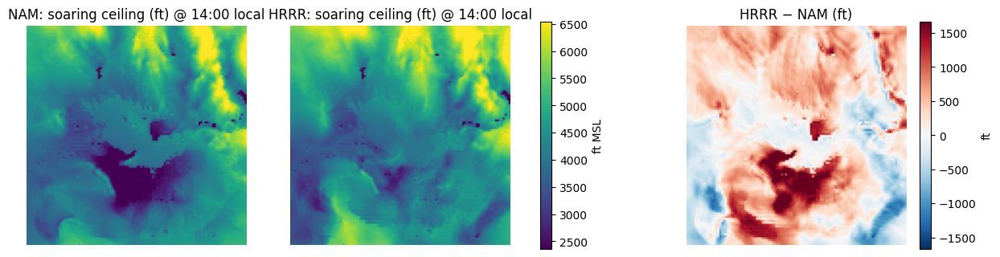
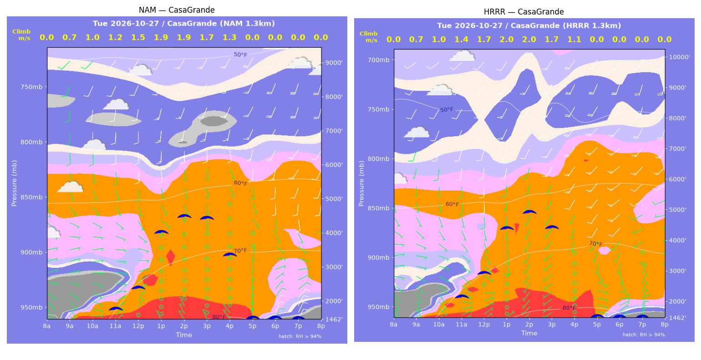
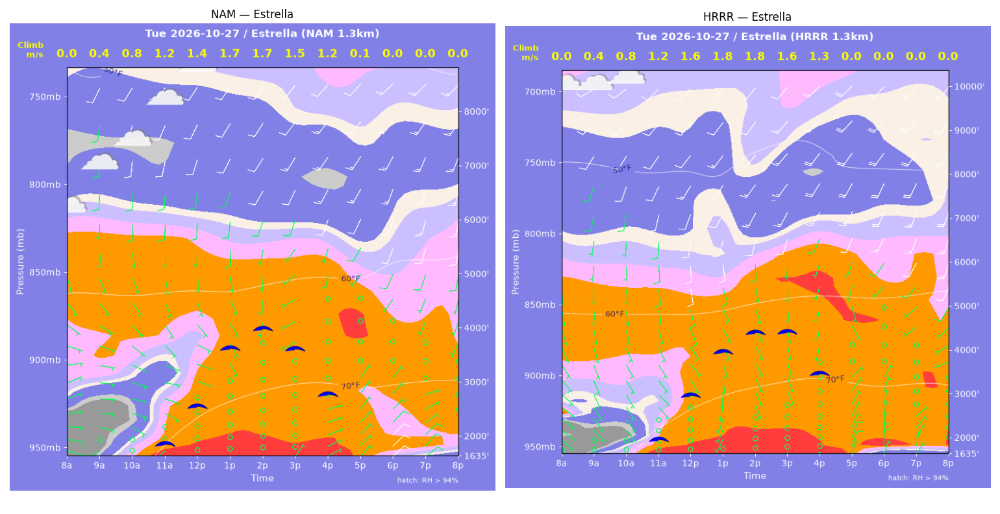
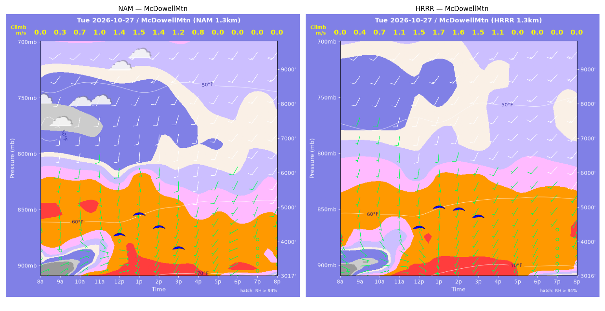
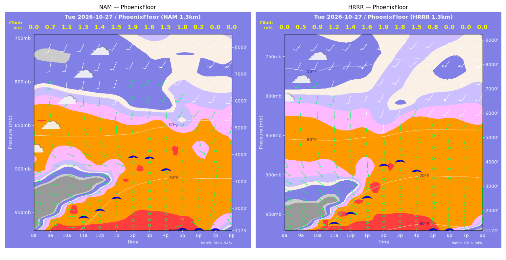
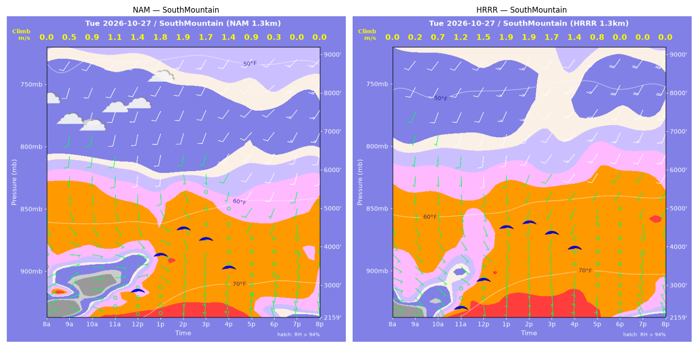
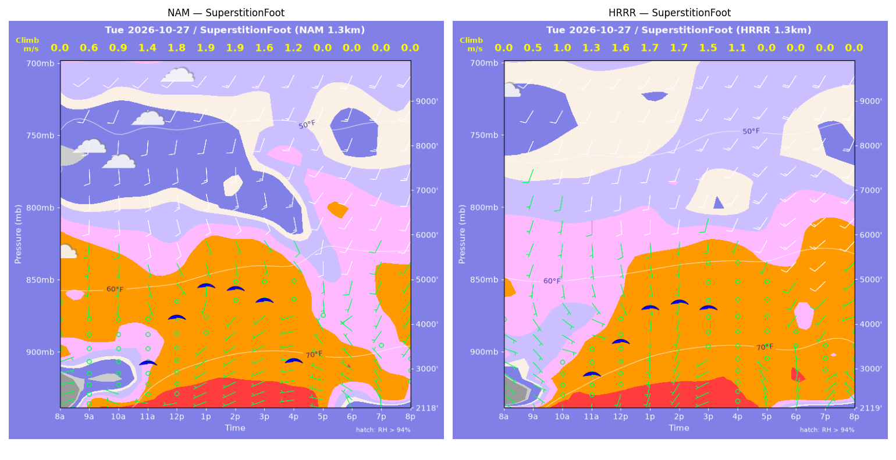
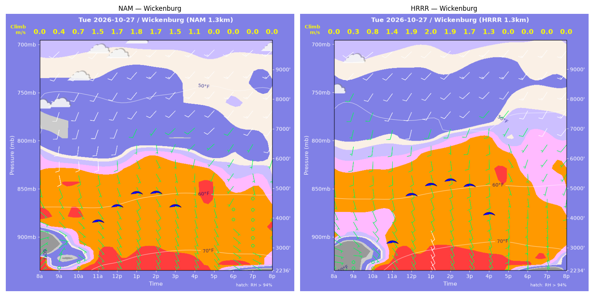

../runs/ab-phoenix-nam — model nam, cycle 2026-10-26 18z, dx 1.3333333740234374 km, 13 hours, grid 114×114../runs/ab-phoenix-hrrr — model hrrr, cycle 2026-10-26 18z, dx 1.3333333740234374 km, 13 hours, grid 114×114Grids identical; afternoon = 12:00–17:59 local (UTC-7). Δ = HRRR − NAM.
| Site | terrain ft | BL top (AGL) med|Δ| / bias (ft) | w* med|Δ| / bias (fpm) | Soaring ceiling med|Δ| / bias (ft) | BL wind speed med|Δ| / bias (kt) | BL wind dir med|Δ| / bias (deg) | 2 m temperature med|Δ| / bias (F) | Sfc LCL (AGL) med|Δ| / bias (ft) | Sensible heat flux med|Δ| / bias (W/m2) |
|---|---|---|---|---|---|---|---|---|---|
| PhoenixFloor | 1175 | 263 / +212 | 4 / -5 | 104 / +82 | 3 / +2 | 27 / +28 | 1 / +2 | 2122 / +2204 | 8 / -7 |
| SouthMountain | 2160 | 666 / +662 | 14 / +9 | 234 / +313 | 2 / +3 | 36 / +43 | 2 / +2 | 2519 / +2532 | 16 / -10 |
| SuperstitionFoot | 2119 | 402 / -167 | 27 / -24 | 365 / -404 | 2 / -2 | 28 / +25 | 0 / +0 | 1646 / +1649 | 30 / -24 |
| Estrella | 1635 | 792 / +823 | 21 / +15 | 422 / +447 | 3 / +3 | 11 / +4 | 2 / +2 | 2048 / +2056 | 8 / +6 |
| Wickenburg | 2236 | 557 / +752 | 37 / +32 | 413 / +618 | 3 / +2 | 16 / +2 | 1 / +1 | 1830 / +1906 | 35 / +30 |
| CasaGrande | 1462 | 544 / +182 | 18 / +7 | 419 / -75 | 2 / +2 | 32 / +58 | 2 / +1 | 1987 / +1960 | 7 / +5 |
| McDowellMtn | 3017 | 326 / +407 | 42 / +35 | 210 / +311 | 1 / -0 | 15 / +11 | 1 / +1 | 1949 / +1921 | 36 / +32 |
| Metric | n | median |Δ| | p90 |Δ| | bias |
|---|---|---|---|---|
| BL top (AGL) (ft) | 42 | 479 | 1044 | +410 |
| w* (fpm) | 42 | 21 | 41 | +10 |
| Soaring ceiling (ft) | 42 | 292 | 792 | +185 |
| BL wind speed (kt) | 42 | 2 | 4 | +1 |
| BL wind dir (deg) | 42 | 25 | 55 | +24 |
| 2 m temperature (F) | 42 | 1 | 2 | +1 |
| Sfc LCL (AGL) (ft) | 42 | 2004 | 2540 | +2033 |
| Sensible heat flux (W/m2) | 42 | 13 | 40 | +4 |
diffmap_tol.png| local | BL top NAM/HRRR ft | w* NAM/HRRR fpm | ceiling NAM/HRRR ft | BL wind NAM/HRRR | T2 NAM/HRRR F | HFX NAM/HRRR |
|---|---|---|---|---|---|---|
| 08:00 | 0 / 0 | 0 / 0 | 1175 / 1175 | 2kt@056 / 4kt@098 | 61 / 60 | 0 / 0 |
| 09:00 | 806 / 383 | 146 / 104 | 1175 / 1175 | 7kt@114 / 5kt@112 | 66 / 65 | 60 / 45 |
| 10:00 | 1315 / 758 | 212 / 172 | 1175 / 1175 | 7kt@122 / 5kt@129 | 69 / 70 | 112 / 103 |
| 11:00 | 1533 / 1313 | 248 / 235 | 1726 / 1542 | 7kt@101 / 5kt@140 | 73 / 74 | 155 / 154 |
| 12:00 | 1763 / 1727 | 273 / 270 | 1966 / 1933 | 5kt@087 / 5kt@146 | 75 / 77 | 180 / 178 |
| 13:00 | 2333 / 2589 | 303 / 312 | 2386 / 2561 | 4kt@110 / 4kt@165 | 78 / 80 | 188 / 186 |
| 14:00 | 4385 / 4379 | 370 / 366 | 3862 / 3839 | 7kt@191 / 9kt@183 | 80 / 82 | 183 / 178 |
| 15:00 | 4487 / 4793 | 348 / 347 | 3810 / 3984 | 6kt@184 / 9kt@193 | 81 / 83 | 148 / 138 |
| 16:00 | 4431 / 4912 | 292 / 288 | 3374 / 3571 | 4kt@181 / 7kt@198 | 82 / 83 | 89 / 77 |
| 17:00 | 3938 / 4209 | 191 / 163 | 1175 / 1175 | 2kt@154 / 5kt@190 | 81 / 83 | 28 / 16 |
| 18:00 | 1474 / 993 | 46 / 0 | 1175 / 1175 | 2kt@333 / 4kt@357 | 81 / 81 | 1 / -2 |
| 19:00 | 490 / 466 | 0 / 0 | 1175 / 1175 | 4kt@321 / 5kt@336 | 79 / 79 | -1 / -3 |
| 20:00 | 381 / 442 | 0 / 0 | 1175 / 1175 | 6kt@336 / 9kt@354 | 77 / 77 | -1 / -6 |
| local | BL top NAM/HRRR ft | w* NAM/HRRR fpm | ceiling NAM/HRRR ft | BL wind NAM/HRRR | T2 NAM/HRRR F | HFX NAM/HRRR |
|---|---|---|---|---|---|---|
| 08:00 | 0 / 0 | 0 / 0 | 2160 / 2159 | 3kt@065 / 4kt@141 | 61 / 64 | 0 / 0 |
| 09:00 | 269 / 102 | 90 / 42 | 2160 / 2159 | 4kt@127 / 5kt@136 | 66 / 69 | 41 / 11 |
| 10:00 | 778 / 553 | 177 / 144 | 2160 / 2159 | 5kt@103 / 5kt@135 | 67 / 70 | 109 / 84 |
| 11:00 | 1113 / 1347 | 224 / 231 | 2160 / 2488 | 5kt@095 / 5kt@132 | 69 / 72 | 155 / 142 |
| 12:00 | 1620 / 2098 | 277 / 292 | 2906 / 3198 | 6kt@116 / 5kt@151 | 71 / 74 | 205 / 184 |
| 13:00 | 2832 / 3870 | 346 / 371 | 3814 / 4535 | 7kt@159 / 8kt@184 | 74 / 76 | 227 / 207 |
| 14:00 | 3801 / 4001 | 365 / 378 | 4466 / 4642 | 6kt@179 / 10kt@209 | 75 / 78 | 200 / 212 |
| 15:00 | 3574 / 3805 | 331 / 340 | 4179 / 4354 | 6kt@182 / 8kt@220 | 76 / 78 | 159 / 162 |
| 16:00 | 2957 / 3810 | 268 / 282 | 3443 / 3955 | 2kt@169 / 11kt@222 | 76 / 78 | 102 / 92 |
| 17:00 | 1729 / 2897 | 171 / 151 | 2160 / 2159 | 2kt@130 / 4kt@205 | 75 / 77 | 45 / 19 |
| 18:00 | 298 / 84 | 56 / 0 | 2160 / 2159 | 4kt@011 / 1kt@340 | 75 / 76 | 9 / -0 |
| 19:00 | 283 / 369 | 0 / 0 | 2160 / 2159 | 4kt@003 / 5kt@329 | 74 / 74 | -0 / -1 |
| 20:00 | 437 / 401 | 0 / 0 | 2160 / 2159 | 6kt@351 / 6kt@332 | 73 / 72 | -1 / -1 |
| local | BL top NAM/HRRR ft | w* NAM/HRRR fpm | ceiling NAM/HRRR ft | BL wind NAM/HRRR | T2 NAM/HRRR F | HFX NAM/HRRR |
|---|---|---|---|---|---|---|
| 08:00 | 0 / 0 | 0 / 0 | 2119 / 2119 | 6kt@068 / 3kt@120 | 60 / 64 | 0 / 0 |
| 09:00 | 588 / 396 | 119 / 97 | 2119 / 2119 | 2kt@355 / 4kt@125 | 70 / 70 | 44 / 34 |
| 10:00 | 811 / 1573 | 185 / 205 | 2119 / 2119 | 1kt@045 / 4kt@126 | 71 / 73 | 121 / 84 |
| 11:00 | 2211 / 2050 | 285 / 257 | 3178 / 2931 | 4kt@162 / 4kt@116 | 74 / 75 | 162 / 127 |
| 12:00 | 3493 / 2892 | 348 / 308 | 4169 / 3645 | 10kt@163 / 6kt@167 | 76 / 77 | 188 / 156 |
| 13:00 | 4379 / 3890 | 380 / 344 | 4842 / 4386 | 11kt@165 / 8kt@176 | 78 / 78 | 195 / 163 |
| 14:00 | 4355 / 4158 | 365 / 335 | 4763 / 4489 | 11kt@159 / 10kt@189 | 79 / 79 | 175 / 140 |
| 15:00 | 4285 / 4340 | 324 / 300 | 4496 / 4347 | 11kt@159 / 9kt@195 | 79 / 79 | 125 / 97 |
| 16:00 | 3572 / 4118 | 236 / 220 | 3140 / 2119 | 10kt@158 / 11kt@203 | 78 / 79 | 57 / 40 |
| 17:00 | 974 / 658 | 0 / 0 | 2119 / 2119 | 4kt@307 / 3kt@333 | 75 / 76 | -3 / -1 |
| 18:00 | 493 / 320 | 0 / 0 | 2119 / 2119 | 7kt@301 / 4kt@011 | 70 / 72 | -4 / -3 |
| 19:00 | 428 / 282 | 0 / 0 | 2119 / 2119 | 5kt@328 / 4kt@050 | 69 / 71 | -4 / -5 |
| 20:00 | 84 / 84 | 0 / 0 | 2119 / 2119 | 8kt@030 / 5kt@001 | 68 / 70 | -8 / -3 |
| local | BL top NAM/HRRR ft | w* NAM/HRRR fpm | ceiling NAM/HRRR ft | BL wind NAM/HRRR | T2 NAM/HRRR F | HFX NAM/HRRR |
|---|---|---|---|---|---|---|
| 08:00 | 0 / 0 | 0 / 0 | 1635 / 1635 | 4kt@108 / 1kt@158 | 58 / 65 | 0 / 0 |
| 09:00 | 248 / 271 | 81 / 86 | 1635 / 1635 | 2kt@171 / 1kt@219 | 67 / 69 | 33 / 36 |
| 10:00 | 652 / 591 | 153 / 153 | 1635 / 1635 | 3kt@114 / 4kt@133 | 69 / 71 | 84 / 94 |
| 11:00 | 1448 / 1388 | 227 / 234 | 1923 / 2019 | 4kt@104 / 5kt@130 | 73 / 74 | 124 / 144 |
| 12:00 | 2106 / 2610 | 274 / 306 | 2584 / 3004 | 4kt@116 / 8kt@158 | 75 / 77 | 150 / 172 |
| 13:00 | 3523 / 3948 | 331 / 353 | 3625 / 3976 | 8kt@179 / 9kt@168 | 77 / 79 | 160 / 174 |
| 14:00 | 4090 / 4630 | 335 / 355 | 3968 / 4391 | 8kt@203 / 12kt@197 | 78 / 80 | 143 / 151 |
| 15:00 | 3900 / 4984 | 294 / 322 | 3584 / 4384 | 5kt@202 / 11kt@203 | 79 / 80 | 101 / 105 |
| 16:00 | 3767 / 5107 | 237 / 247 | 2744 / 3433 | 6kt@197 / 9kt@208 | 78 / 80 | 54 / 46 |
| 17:00 | 279 / 1323 | 20 / 0 | 1635 / 1635 | 7kt@047 / 5kt@036 | 77 / 78 | -0 / -3 |
| 18:00 | 822 / 736 | 0 / 0 | 1635 / 1635 | 7kt@041 / 7kt@013 | 73 / 73 | -8 / -5 |
| 19:00 | 680 / 401 | 0 / 0 | 1635 / 1635 | 7kt@046 / 5kt@036 | 72 / 72 | -7 / -4 |
| 20:00 | 416 / 85 | 0 / 0 | 1635 / 1635 | 6kt@058 / 4kt@076 | 70 / 71 | -8 / -3 |
| local | BL top NAM/HRRR ft | w* NAM/HRRR fpm | ceiling NAM/HRRR ft | BL wind NAM/HRRR | T2 NAM/HRRR F | HFX NAM/HRRR |
|---|---|---|---|---|---|---|
| 08:00 | 0 / 0 | 0 / 0 | 2236 / 2235 | 7kt@043 / 2kt@283 | 58 / 56 | 0 / 0 |
| 09:00 | 376 / 102 | 84 / 66 | 2236 / 2235 | 3kt@020 / 2kt@321 | 66 / 63 | 22 / 43 |
| 10:00 | 657 / 659 | 141 / 152 | 2236 / 2235 | 5kt@125 / 5kt@138 | 70 / 69 | 62 / 81 |
| 11:00 | 3386 / 2184 | 295 / 278 | 3938 / 3246 | 8kt@169 / 8kt@166 | 73 / 73 | 113 / 152 |
| 12:00 | 3850 / 4193 | 335 / 375 | 4429 / 4822 | 9kt@176 / 9kt@184 | 74 / 75 | 145 / 194 |
| 13:00 | 4377 / 4594 | 356 / 391 | 4848 / 5141 | 7kt@179 / 9kt@198 | 75 / 76 | 154 / 202 |
| 14:00 | 4484 / 4885 | 344 / 381 | 4847 / 5281 | 6kt@168 / 8kt@200 | 75 / 77 | 136 / 176 |
| 15:00 | 4238 / 4952 | 297 / 339 | 4379 / 5084 | 4kt@203 / 8kt@205 | 76 / 77 | 91 / 121 |
| 16:00 | 4006 / 4973 | 216 / 253 | 2236 / 4119 | 5kt@224 / 8kt@188 | 75 / 77 | 36 / 50 |
| 17:00 | 2030 / 3901 | 0 / 0 | 2236 / 2235 | 4kt@164 / 7kt@151 | 73 / 74 | -2 / -5 |
| 18:00 | 353 / 587 | 0 / 0 | 2236 / 2235 | 4kt@129 / 7kt@183 | 69 / 68 | -3 / -7 |
| 19:00 | 84 / 84 | 0 / 0 | 2236 / 2235 | 4kt@124 / 5kt@174 | 67 / 66 | -2 / -4 |
| 20:00 | 84 / 339 | 0 / 0 | 2236 / 2235 | 7kt@086 / 5kt@139 | 65 / 64 | -6 / -8 |
| local | BL top NAM/HRRR ft | w* NAM/HRRR fpm | ceiling NAM/HRRR ft | BL wind NAM/HRRR | T2 NAM/HRRR F | HFX NAM/HRRR |
|---|---|---|---|---|---|---|
| 08:00 | 0 / 0 | 0 / 0 | 1462 / 1462 | 3kt@122 / 2kt@106 | 57 / 57 | 0 / 0 |
| 09:00 | 501 / 450 | 133 / 128 | 1462 / 1462 | 6kt@139 / 5kt@155 | 64 / 67 | 72 / 72 |
| 10:00 | 899 / 976 | 198 / 204 | 1462 / 1462 | 5kt@119 / 5kt@134 | 69 / 72 | 133 / 134 |
| 11:00 | 1194 / 1684 | 237 / 273 | 1817 / 2216 | 4kt@094 / 5kt@120 | 73 / 76 | 173 / 188 |
| 12:00 | 1941 / 2650 | 290 / 330 | 2416 / 2956 | 4kt@106 / 7kt@169 | 77 / 79 | 196 / 214 |
| 13:00 | 4109 / 4605 | 375 / 395 | 3999 / 4391 | 10kt@176 / 12kt@193 | 80 / 81 | 201 / 211 |
| 14:00 | 4805 / 5396 | 379 / 394 | 4445 / 4892 | 12kt@179 / 13kt@205 | 81 / 83 | 178 / 180 |
| 15:00 | 5053 / 5035 | 339 / 342 | 4369 / 4378 | 10kt@179 / 13kt@208 | 82 / 84 | 121 / 125 |
| 16:00 | 4794 / 3783 | 254 / 219 | 3297 / 1462 | 9kt@173 / 11kt@209 | 82 / 83 | 53 / 44 |
| 17:00 | 1296 / 1621 | 0 / 0 | 1462 / 1462 | 4kt@001 / 4kt@179 | 79 / 79 | -3 / -1 |
| 18:00 | 611 / 284 | 0 / 0 | 1462 / 1462 | 8kt@034 / 4kt@062 | 74 / 73 | -7 / -4 |
| 19:00 | 522 / 340 | 0 / 0 | 1462 / 1462 | 9kt@041 / 8kt@021 | 72 / 70 | -12 / -7 |
| 20:00 | 324 / 287 | 0 / 0 | 1462 / 1462 | 8kt@036 / 9kt@010 | 70 / 69 | -6 / -8 |
| local | BL top NAM/HRRR ft | w* NAM/HRRR fpm | ceiling NAM/HRRR ft | BL wind NAM/HRRR | T2 NAM/HRRR F | HFX NAM/HRRR |
|---|---|---|---|---|---|---|
| 08:00 | 0 / 0 | 0 / 0 | 3017 / 3017 | 3kt@062 / 4kt@053 | 60 / 61 | 0 / 0 |
| 09:00 | 202 / 312 | 68 / 83 | 3017 / 3017 | 5kt@050 / 6kt@085 | 63 / 66 | 21 / 27 |
| 10:00 | 499 / 559 | 128 / 144 | 3017 / 3017 | 4kt@071 / 5kt@109 | 66 / 67 | 60 / 81 |
| 11:00 | 1091 / 1391 | 192 / 225 | 3017 / 3017 | 3kt@123 / 4kt@164 | 68 / 69 | 94 / 124 |
| 12:00 | 2777 / 2831 | 272 / 299 | 4254 / 4464 | 7kt@186 / 5kt@195 | 70 / 71 | 105 / 145 |
| 13:00 | 3623 / 3557 | 293 / 333 | 4824 / 5035 | 10kt@183 / 8kt@183 | 71 / 73 | 101 / 159 |
| 14:00 | 3089 / 3550 | 277 / 321 | 4434 / 4969 | 8kt@172 / 8kt@197 | 72 / 73 | 99 / 143 |
| 15:00 | 2769 / 3561 | 237 / 287 | 3831 / 4742 | 8kt@180 / 9kt@205 | 72 / 74 | 68 / 101 |
| 16:00 | 2089 / 3100 | 164 / 214 | 3017 / 3017 | 8kt@191 / 8kt@209 | 72 / 73 | 28 / 47 |
| 17:00 | 1308 / 1500 | 0 / 0 | 3017 / 3017 | 5kt@221 / 5kt@209 | 70 / 72 | -2 / -2 |
| 18:00 | 342 / 314 | 0 / 0 | 3017 / 3017 | 3kt@238 / 3kt@218 | 68 / 69 | -1 / -1 |
| 19:00 | 84 / 83 | 0 / 0 | 3017 / 3017 | 2kt@271 / 2kt@332 | 67 / 68 | -0 / -0 |
| 20:00 | 83 / 83 | 0 / 0 | 3017 / 3017 | 3kt@024 / 4kt@014 | 66 / 66 | -1 / -2 |
montage_PhoenixFloor.pngmontage_SouthMountain.pngmontage_SuperstitionFoot.pngmontage_Estrella.pngmontage_Wickenburg.pngmontage_CasaGrande.pngmontage_McDowellMtn.png